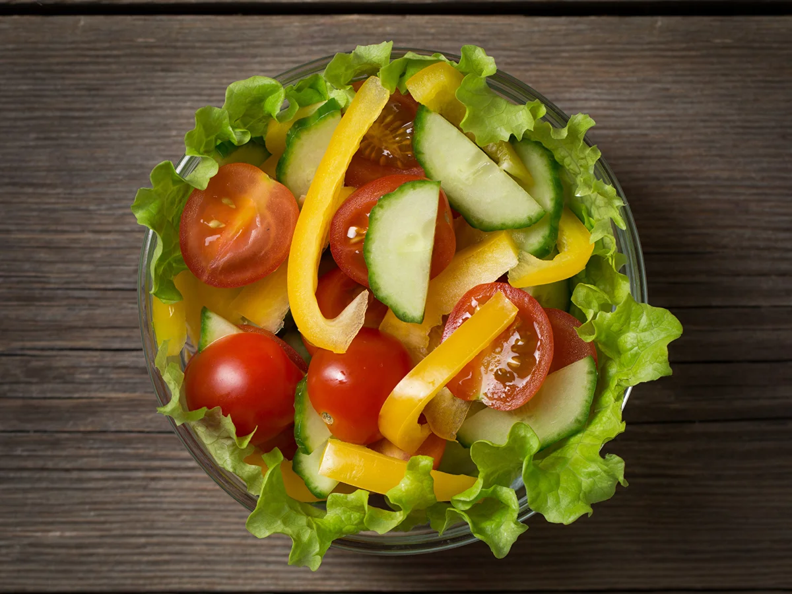
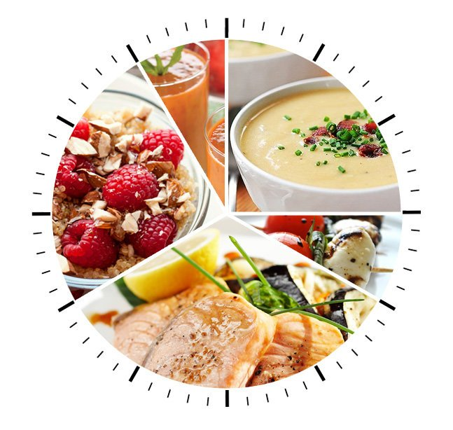
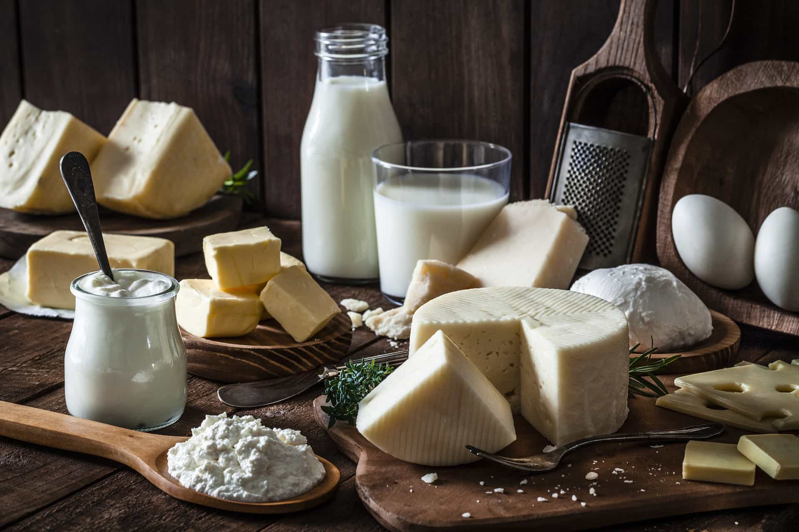
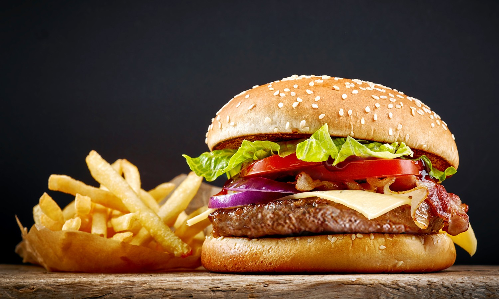

Питание
В здоровом теле — здоровый дух: почему важно соблюдать правила здорового питания
Здоровое питание (здоровая диета) — это питание, обеспечивающее рост, нормальное развитие и жизнедеятельность человека, способствующее укреплению его здоровья и профилактике заболеваний. Соблюдение правил здорового питания в сочетании с регулярными физическими упражнениями сокращает риск хронических заболеваний и расстройств, таких как ожирение, сердечно-сосудистые заболевания, диабет, повышенное давление и рак. (Прим.: В медицине такие заболевания называются алиментарными (латынь alimentarius — связанный с питанием) – т.е. болезни, обусловленные недостаточным или избыточным по сравнению с физиологическими потребностями поступлением в организм пищевых веществ).
Гигиена питания — это отрасль гигиены, изучающая проблемы полноценной пищи и рационального питания здорового человека. В процессе развития из гигиены питания выделилась диетология, изучающая питание больных и разрабатывающая принципы лечебного питания. Самостоятельным разделом является и изучение питания в раннем возрасте.
Человеческий организм получает почти все необходимые вещества именно через пищу и воду. Состав продуктов питания и их свойства непосредственно влияют на здоровье, физическое развитие, трудоспособность, эмоциональное состояние и в целом на качество и продолжительность жизни. Трудно найти другой фактор, который бы оказывал такое серьезное воздействие на организм человека.
По мнению ряда ученых, физическое здоровье на 50% зависит от образа жизни, куда входит и характер питания человека. На наследственность и состояние окружающей среды приходится по 20%, и только 10% — на уровень медицинского обеспечения[1].
С питанием связаны все жизненно важные функции организма. Оно — источник развития тканей и клеток, их постоянного обновления, насыщения человека энергией. Неправильное питание ? как избыточное, так и недостаточное ? способно нанести существенный вред здоровью человека в любом возрасте. Это выражается в снижении уровня физического и умственного развития, быстрой утомляемости, неспособности оказывать сопротивление воздействию неблагоприятных факторов окружающей среды, снижении работоспособности и даже преждевременном старении и сокращении продолжительности жизни. Кстати, каждой женщине, которая следит за собой, известно, что состояние кожи напрямую зависит от состояния пищеварительной системы, в частности кишечника, а значит, и от здорового питания.
Но вот какой именно способ питания считать правильным? На этот счет существует множество теорий, и чуть ли не каждый день появляются новые. Кто-то выступает за полный отказ от мяса, кто-то провозглашает сыроедение панацеей от всех болезней и бед, а кто-то разрабатывает сочетания продуктов, якобы позволяющие организму достичь полной пищевой гармонии. На самом деле, любые ограничения в питании вряд ли можно считать полезными и приемлемыми для всех. Человеческий организм — очень сложная система, для нормального функционирования ему требуется и мясная, и растительная пища. Недостаток полезных веществ, содержащихся в том же мясе, например железа высокой биологической доступности, может вызвать серьезные проблемы со здоровьем. Правильное питание заключается не в контроле калорий и жестких диетах, а в обеспечении организма полноценным рационом, в который входят все необходимые для него продукты: мясо, злаки, овощи, фрукты. Подбор рациона — одна из главных задач в правильном питании, но не менее важным является и ежедневное следование ему. Если придерживаться основных правил здорового питания не от случая к случаю, а постоянно, то не придется заботиться о лишнем весе, снижении иммунитета, проблемах с волосами, кожей и здоровьем в целом.
Принципы здорового питания: это должен знать каждый!
С чего же начать? Прежде всего, с твердого решения питаться правильно. Вот несколько несложных правил, на которые опирается практически вся современная диетология и которые помогут быстро освоить принципы здорового питания.
Рацион
Правило № 1. Навсегда забудьте про фастфуд и постарайтесь не злоупотреблять сладким.
Правило № 2. Ешьте как можно больше сезонных продуктов — в них содержится максимум полезных веществ. Зимние овощи и фрукты, выращенные в теплицах или привезенные издалека, из-за обработки химикатами и длительного хранения не только теряют всю пользу, но и становятся аккумуляторами нитратов и других вредных химических соединений.
Правило № 3. Максимально ограничьте употребление рафинированных продуктов: сахара, растительного масла, белой пшеничной муки, очищенного белого риса. В них нет клетчатки, которая очень важна для работы пищеварительного тракта, а также для питания полезных бактерий, живущих в кишечнике. Именно поэтому гораздо лучше вместо белого хлеба есть цельнозерновой, а рафинированный сахар заменить на коричневый или даже на мед.
Правило № 4. Пейте воду. Чай, кофе и соки воду не заменяют. В сутки организму необходимо получать не меньше 30–35 мл жидкости на 1 кг веса. Сладкие газировки — полностью под запретом, в них содержится слишком много сахара.
Правило № 5. Не забывайте о белковой пище. Она способна надолго дать чувство сытости и к тому же богата аминокислотами. Белки необходимы организму для строительства мышечной ткани, замены устаревших клеток. К богатым белками продуктам относятся различные виды мяса, рыба, кальмары, креветки, орехи, грибы, некоторые бобовые, яйца, творог.
Приготовление пищи
Правило № 1. Используйте для приготовления пищи несколько видов растительного масла. Это лучший источник необходимых организму жирных кислот. Очень хорошо, если на кухне постоянно будут несколько бутылочек с разными маслами: оливковым, кунжутным, льняным, маслом грецкого и кедрового ореха. Помните, что нерафинированные масла не подходят для термической обработки.
Правило № 2. Готовьте правильно. Сохранить все полезные вещества в продуктах можно при минимальной тепловой обработке. Макароны или крупу рекомендуется варить всего несколько минут. Кстати, классическая итальянская паста всегда должна быть чуть-чуть недоваренной и заправляться растительным маслом. Мясные и рыбные продукты обязательно должны быть термически обработаны, поскольку в них могут находиться паразиты. Но при этом от жарки на масле лучше отказаться, оптимальные способы — варка, запекание в духовом шкафу и приготовление на пару.
Правило № 3. Используйте для готовки натуральные и свежие продукты. Любой полуфабрикат или товар длительного хранения с консервантами, усилителями вкуса и красителями увеличивает нагрузку на организм, препятствует выведению токсинов, замедляет обмен веществ. Кусочек курицы, запеченный в духовке, во много раз полезнее самой качественной и дорогой колбасы из магазина.
Режим
Правило № 1. Обязательно соблюдайте режим питания. Редкие приемы пищи вредны так же, как постоянные перекусы и привычка все время что-нибудь жевать. Здоровому человеку оптимально есть 4–5 раз в день, промежуток между едой более 5 часов замедляет метаболизм и заставляет организм переходить на режим экономии. В результате начинают накапливаться жировые отложения. Постарайтесь не перекусывать на рабочем месте или у телевизора. Процесс потребления пищи в этом случае становится неконтролируемым, наступает не насыщение, а переедание.
Правило № 2. Ежедневно съедайте немного свежих овощей и фруктов. Рекомендованное количество — по 300 г тех и других. Так вы получите все необходимые витамины и клетчатку. Очень удобно брать с собой на работу заранее порезанное яблоко или грушу, огурец или морковные палочки.
Конечно, немедленно и полностью изменить свои привычки и отказаться от вкусного торта с чашечкой крепкого кофе очень сложно. Это может потребовать большого напряжения воли и привести к стрессу. Так что изредка можно позволить себе и бутерброд с колбасой, и пирожное. Главное, чтобы это не стало ежедневной пищей.
Рекомендуемые продукты: вкусно и полезно
Все продукты, употребляемые человеком в пищу, можно условно разделить на «полезные» и «вредные». Полезные продукты необходимо включать в рацион каждый день: они богаты аминокислотами, витаминами, микро- и макроэлементами, жирными кислотами, клетчаткой. При этом они легко усваиваются, не замедляют обмен веществ и не оказывают вредного влияния на здоровье. К таким продуктам традиционно относят следующие:
Свежие ягоды, фрукты и овощи (витамин С, клетчатка).
Крупы и приготовленные из них каши (витамины В, Е, магний, калий, фолиевая кислота).
Сухофрукты и орехи (витамины, жирные кислоты, белок).
Мясо птицы (белок, аминокислоты, витамины А, В, Е).
Рыба и морепродукты (белок, полиненасыщенные кислоты, витамины D, E, B12, кальций, фосфор).
Молочные продукты: сметана, творог, йогурт (кальций, белок, аминокислоты, витамины D, A, B12, углеводы).
Зеленый чай (витамины, минералы, полифенолы).
Растительные масла, полученные методом холодного отжима (фосфолипиды, линолевая и другие полиненасыщенные кислоты, витамины А, D, E).
Мед (витамины, микроэлементы, глюкоза, фруктоза, фитонциды, быстрые углеводы).
Зерновой хлеб (клетчатка, ферменты, аминокислоты).
Употребление этих продуктов в правильных сочетаниях и является тем, что называют здоровым питанием, поскольку они приносят организму несомненную пользу и способны не только поддержать здоровье, но и укрепить его. Диетологи рекомендуют, например, есть крупы на воде в сочетании с овощными салатами, заправленными оливковым маслом. Кстати, сочетать в салате огурцы и томаты не рекомендуется — нарезанные огурцы выделяют особый фермент, который разрушает содержащийся в томатах витамин С. К мясу, рыбе и птице подойдут капуста, спаржа, кабачки, редис, огурцы. Фрукты лучше есть отдельно, до еды или примерно через час после.
Нерекомендуемые продукты: ненужный балласт
Но употребляя в пищу полезные продукты, нельзя забывать и об исключении из рациона продуктов «вредных» ? тех, которые вызывают накопление в организме жиров и нарушение обмена веществ:
Чипсы, попкорн, сухарики, соленые орешки.
Алкогольные напитки.
Любые полуфабрикаты и концентраты: сухое картофельное пюре, лапша быстрого приготовления и т.д.
Сдобная выпечка, особенно с высоким содержанием сахара.
Жареные блюда.
Готовые фабричные соусы, включая майонез.
Копчености, колбасы.
Сладости.
Фастфуд.
Соки (кроме свежевыжатых), газированные напитки.
Нежелательно и употребление сахара и соли. Если уж отказаться от них совсем не получается, то вместо сахара можно использовать мед, а соль использовать по минимуму, лишь чуть-чуть подсаливая блюда. В последнее время популярными стали морская и розовая гималайская соль, содержащие меньше хлорида натрия и больше полезных веществ.
Калорийность рациона и БЖУ-баланс
Программу здорового питания невозможно составить без определения калорийности рациона и подсчета баланса белков, жиров и углеводов (БЖУ-баланса). Правильно подобранное питание позволяет не испытывать чувства голода и слабости, обеспечивать организм достаточным количеством питательных веществ, удерживать вес на нужном уровне и отлично себя чувствовать.
Чтобы рассчитать калорийность рациона, необходимо знать допустимую норму и оптимальное ежедневное количество калорий, а также учитывать образ жизни: калорийность пищи при активных занятиях спортом должна быть выше, чем при сидячей работе в офисе и таком же отдыхе дома перед телевизором.
Средняя суточная норма калорий для мужчин составляет, в зависимости от возраста и образа жизни, 2000–2400 ккал, для женщин — 1800–2400 ккал[2]. Баланс белков, жиров и углеводов в норме должен быть следующим:
белки — 30–40%;
углеводы — 40–50%;
жиры — 20–25%[3].
На заметку
Существует несколько формул, по которым можно рассчитать индивидуальную потребность в калориях. Например, формула ВОЗ основана на использовании величины площади тела, а формула Кетча-Макардла — на учете процента жира в теле.
Зная собственные показатели и используя таблицу калорийности, можно очень легко составить примерное меню на неделю, в котором будут представлены все необходимые организму продукты.

Яковлев Антон